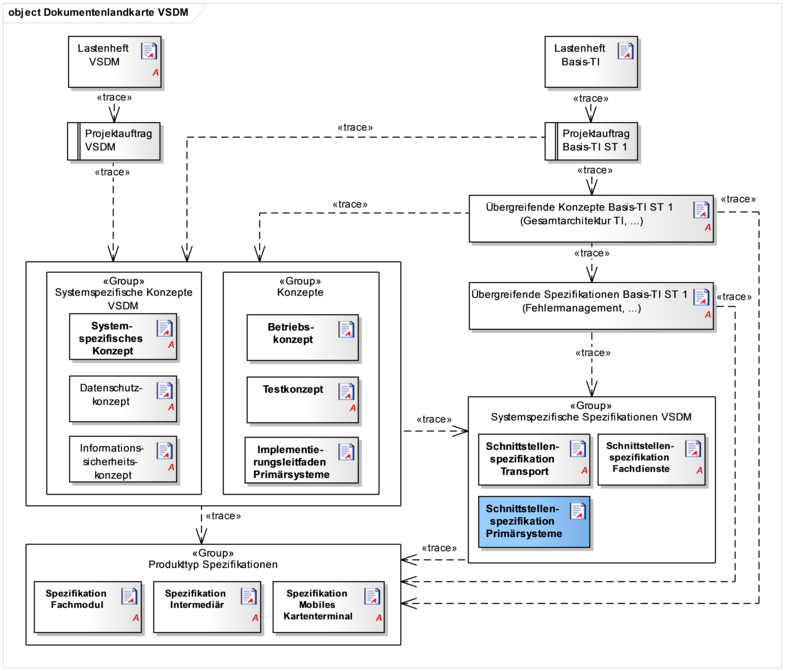

Elektronische Gesundheitskarte und Telematikinfrastruktur
Schnittstellenspezifikation Primärsysteme VSDM
| Version | 1.5.0 |
| Revision | 571731 |
| Stand | 14.05.2018 |
| Status | freigegeben |
| Klassifizierung | öffentlich |
| Referenzierung | gemSpec_SST_PS_VSDM |
Änderungen zur Vorversion
Anpassungen lt. Änderungsliste P15.2
Dokumentenhistorie
| Version |
Datum |
Kap./ Seite |
Grund der Änderung, besondere Hinweise |
Bearbeitung |
|---|---|---|---|---|
| 0.1.0 |
Oktober 11 |
Ersterstellung |
gematik |
|
| 0.7.0 |
04.06.12 |
Stand zur Abstimmung |
gematik |
|
| 1.0.0 |
15.10.12 |
Einarbeitung Gesellschafterkommentare |
gematik |
|
| 1.1.0 |
12.11.12 |
Einarbeitung Kommentare aus der übergreifenden Konsistenzprüfung |
gematik |
|
| 1.2.0 |
15.08.13 |
Einarbeitung lt. Änderungsliste vom 08.08.13 |
gematik |
|
| 1.3.0 |
21.02.14 |
Losübergreifende Synchronisation |
gematik |
|
| 1.4.0 |
12.08.16 |
Anpassungen zum Online-Produktivbetrieb (Stufe 1) |
gematik |
|
| Einarbeitung lt. Änderungsliste P15.2 |
gematik |
|||
| 1.5.0 | 14.05.18 | freigegeben | gematik |
Eindeutig spezifizierte Schnittstellen an den Außengrenzen der Telematikinfrastruktur (TI) sind Grundlage für die Interoperabilität zwischen der TI und angeschlossenen Systemen. Produkte verschiedener Hersteller und Anbieter müssen die spezifizierten Schnittstellen nutzen, um die geforderte Funktionalität und Interoperabilität zu gewährleisten.
Dieses Dokument spezifiziert die Schnittstellen des Fachmoduls VSDM, die von Clientsystemen zum Lesen der Versichertenstammdaten genutzt werden. Die Schnittstellen werden in diesem Dokument in der für die Entwicklung und Test benötigten Tiefe spezifiziert. Das Dokument richtet neben anderen Spezifikationen Blattanforderungen an das Fachmodul VSDM. Blattanforderungen sind detaillierte Anforderungen, die direkt Grundlagen der Implementierung sind (im Gegensatz zu allgemeineren Umsetzungsanforderungen). Die Schnittstellenspezifikation ist aus der Fachmodulspezifikation herausgelöst, da sie sich neben den Entwicklern von Fachmodulen auch an Entwickler von Primärsystemen richtet.
Clientsysteme sind Primärsysteme der Leistungserbringer oder Anwendungen in den Geschäftsstellen der Kostenträger. Primärsysteme der Leistungserbringer sind Praxisverwaltungssysteme (PVS), Krankenhausinformationssysteme (KIS) und Apothekenverwaltungssysteme (AVS). In diesem Dokument werden die Begriffe Primärsystem und Clientsystem synonym verwendet.
Ziel des Dokumentes ist die Umsetzung der Anforderungen aus dem systemspezifischem Konzept VSDM, die sich auf die Schnittstellen des Fachmoduls VSDM für die Clientsysteme beziehen.
Grundlagen für die Ausführungen dieses Dokumentes sind

Abbildung 1: Abb_SST_PS_VSDM_01 - Dokumentenhierarchie im Projekt VSDM
Die Abbildung zeigt schematisch die Dokumentenhierarchie im Projekt VSDM, in welcher die Schnittstellenspezifikation Primärsysteme und die Konzepte und Spezifikationen eingeordnet sind. Die Abbildung stellt nicht die vollständige Dokumentenhierarchie des Projekts Online-Produktivbetrieb (Stufe 1) oder den Trace der Anforderungen dar.
Dieses Dokument richtet sich an:
Dieses Dokument enthält normative Festlegungen zur Telematikinfrastruktur des deutschen Gesundheitswesens. Der Gültigkeitszeitraum der vorliegenden Version und deren Anwendung in Zulassungsverfahren wird durch die gematik GmbH in gesonderten Dokumenten (z. B. Dokumentenlandkarte, Produkttypsteckbrief, Leistungsbeschreibung) festgelegt und bekannt gegeben.
Wichtiger Schutzrechts-/Patentrechtshinweis
Die nachfolgende Spezifikation ist von der gematik allein unter technischen Gesichtspunkten erstellt worden. Im Einzelfall kann nicht ausgeschlossen werden, dass die Implementierung der Spezifikation in technische Schutzrechte Dritter eingreift. Es ist allein Sache des Anbieters oder Herstellers, durch geeignete Maßnahmen dafür Sorge zu tragen, dass von ihm aufgrund der Spezifikation angebotene Produkte und/oder Leistungen nicht gegen Schutzrechte Dritter verstoßen und sich ggf. die erforderlichen Erlaubnisse/Lizenzen von den betroffenen Schutzrechtsinhabern einzuholen. Die gematik GmbH übernimmt insofern keinerlei Gewährleistungen.
Innerhalb dieses Dokuments wird auf die technische Umsetzung der Schnittstelle des Fachmoduls VSDM für Clientsysteme eingegangen. Anforderungen an andere Produkttypen sind nicht Bestandteil des Dokuments. Für die Beschreibung der Anwendungsfälle und Abläufe der Fachanwendung VSDM wird auf das systemspezifische Konzept VSDM [gemSysL_VSDM] verwiesen.
Dieses Dokument fokussiert auf das sichtbare Außenverhalten der Schnittstelle selbst und damit auf die Eingangs- und Ausgangsparameter der entsprechenden Operationen. Anforderungen zu den internen Abläufen im Fachmodul finden sich in [gemSpec_FM_VSDM].
Ebenfalls in [gemSpec_FM_VSDM] enthalten und damit nicht Bestandteil dieses Dokuments ist die Beschreibung der durch das Fachmodul für das Primärsystem erzeugten Benachrichtigungen (Events).
Nicht beschrieben sind Konfigurationen, Abläufe und die Verarbeitung der Daten im Primärsystem. Diese finden sich im Implementierungsleitfaden Primärsysteme [gemILF_PS]. Insbesondere Entwickler von Primärsystemen sollten für die Schnittstellenimplementierung dieses Dokument als Grundlage gelesen haben.
Für die genauere Unterscheidung zwischen normativen und informativen Inhalten werden die dem RFC 2119 [RFC2119] entsprechenden in Großbuchstaben geschriebenen, deutschen Schlüsselworte (MUSS, DARF NICHT, SOLL, SOLL NICHT, KANN) verwendet.
In Anhang B dieses Dokuments werden in der Tabelle 8 die Eingangsanforderungen aufgelistet, die in diesem Ergebnisdokument berücksichtigt sind. In der Spalte "umgesetzt durch" finden sich die eindeutigen Referenzen auf die dazu erarbeiteten Blattanforderungen. In Anhang B2 stehen die Blattanforderungen mit ihrem Text und dem entsprechenden Vorgänger.
Sofern im Dokument auf die Ausgangsanforderungen verwiesen wird, erfolgt dies in eckigen Klammern, z. B. [VSDM-A_2093]. Wird auf Eingangsanforderungen verwiesen, erfolgt dies in runden Klammern, z. B. (VSDM-A_303).
Die Ausgangsanforderungen und deren Zusammenhang zu den Anforderungen aus den anderen Dokumenten bezüglich der Fachanwendung VSDM werden tabellarisch in Anhang B dargestellt.
Die Darstellung der Schemadaten mittels Klassendiagramm erfolgt in UML.
Listing, Bezeichner, Variablen oder XML-Elemente werden in Courier dargestellt.
Als Schnittstellentechnologie wird SOAP verwendet. Um Interoperabilität zwischen verschiedenen SOAP-Implementierungen [SOAP1.1] zu gewährleisten, erfolgt die technische Umsetzung der Schnittstellen konform zum WS-I Basic Profile in der Version 1.2 [BasicProfile1.2] [VSDM-A_2658].
Die Schnittstellen des Fachmoduls VSDM werden in Form von WSDL [WSDL1.1] und XML-Schemas definiert. Gemäß dem WS-I Basic Profile muss für die Definition die Web Services Description Language (WSDL) in der Version 1.1 verwendet werden. Die aus der WSDL resultierende Nachricht muss dem Simple Object Access Protocol (SOAP) in der Version 1.1 entsprechen und die Übertragung erfolgt mittels des Hypertext Transfer Protocols (HTTP) in der Version 1.1.
Die WSDL-Dateien und XML-Schemadateien müssen mit dieser Schnittstellenspezifikation zur Verfügung gestellt werden, um eine einfache Implementierung zu gewährleisten und eine maschinelle Prüfung der spezifizierten Elemente zu ermöglichen. Die in den WSDLs verwendete Kodierungsmethode der SOAP-Nachrichten muss „wrapped document/literal“ sein, um Interoperabilität zu gewährleisten.
Es ist bei Leistungserbringern aufgrund gesetzlicher Vorschriften bzw. sektorspezifischer Regelungen von einer sicheren Umgebung auszugehen. Demnach ist eine unverschlüsselte Kommunikation zwischen Primärsystem und Fachmodul des Konnektors ausreichend.
Die Notwendigkeit der Absicherung der Kommunikation zwischen Fachmodul VSDM und Clientsystem hängt allerdings von dem Angriffsrisiko im konkreten Einsatzumfeld ab. Die Verantwortung für die Beurteilung der Sicherheit der Einsatzumgebung haben der Leistungserbringer bzw. die Verantwortlichen in den Geschäftsstellen der Kostenträger. Ein Ergebnis dieser Bewertung kann sein, dass die Kommunikation zwischen Clientsystem und Konnektor durch Verschlüsselung zusätzlich abzusichern ist, um die Kommunikation ausreichend vor Abhören zu schützen.
Das Fachmodul VSDM muss daher dem Clientsystem die Verschlüsselung der Kommunikation anbieten, indem es die durch den Konnektor bereitgestellte Funktionalität zur Transportsicherung an der Primärsystemschnittstelle nutzt. [VSDM-A_2678]
Verschlüsselte Kommunikation mittels TLS ist weit verbreitete industrielle Praxis und stellt keinen nennenswerten Implementierungsaufwand dar. Daher wird zur allgemeinen Erhöhung des Schutzniveaus an der Schnittstelle des Primärsystems zum Konnektor die standardmäßige Verschlüsselung der Kommunikation mit serverseitiger Authentisierung empfohlen.
Zusätzlich kann vom Konnektor eine Client-Authentisierung erzwungen werden. Dies ist entweder eine Basic Authentication mittels Benutzername und Passwort oder eine Client Authentication mittels Software-Zertifikat. Bei der Basic Authentication müssen Benutzername und Passwort in der Schnittstellenkonfiguration des PS hinterlegt und mit der Konfiguration des Konnektors abgestimmt sein. Im Fall der zertifikatsbasierten Client Authentication wird im Konnektor ein Zertifikat generiert und exportiert. Dieses ist anschließend für die Nutzung im Primärsystem zu importieren. Weitere Festlegungen (z. B. Format der Zertifikatsdatei) finden sich in [gemSpec_Kon] sowie Anwendungshinweise in [gemILF_PS].
Der Sender muss gültige SOAP-Nachrichten konform der WSDL bzw. der XSDs der aufgerufenen SOAP-Schnittstelle erzeugen. Es sind nur die in der Spezifikation genannten Header-Elemente erlaubt. [VSDM-A_2703]
Das Fachmodul VSDM validiert eingehende Nachrichten gegen das entsprechende Schema (XSD). Nicht valide Nachrichten müssen mit einer Fehlermeldung zurückgewiesen werden. Neben der Schemavalidierung muss das Fachmodul auch die Inhalte aller zur Verarbeitung benötigten Elemente auf zulässige Werte validieren. [VSDM-A_2675][VSDM-A_2689]
Das Fachmodul als Empfänger einer Nachricht muss nicht auf zusätzliche Header-Elemente prüfen. Enthält eine Nachricht zusätzliche Header-Elemente soll das Fachmodul diese ignorieren und die Verarbeitung fortsetzen. [VSDM-A_2676]
Die externen Schnittstellen I_VSDService und I_KVKService zum Primärsystem müssen, wie in der Systemlösung VSDM dargestellt, umgesetzt werden. [VSDM-A_2596] [VSDM-A_2608]
Die Schnittstellen müssen dabei gleichartig die verschiedenen Konfigurationsvarianten der Leistungserbringerumgebung unterstützen (Online-Szenario und Standalone-Szenario), welche detailliert im Implementierungsleitfaden Primärsysteme beschrieben sind.
Die Bezeichner I_VSDService und I_KVKService sind die logischen Bezeichnungen der Schnittstellen. Die konkreten Operationen ReadVSD und ReadKVK werden in entsprechenden WSDL-Dateien spezifiziert.
Abbildung 2: Abb_SST_PS_VSDM_02 - Übersicht der PS-Schnittstellen des Fachmoduls VSDM
Das Fachmodul VSDM muss die Schnittstelle I_VSDService mit der Operation ReadVSD realisieren, die mehrfach parallel aufgerufen werden kann. Die SOAP-Schnittstelle ist in [VSDService.wsdl] gemäß Abbildung Abb_SST_PS_VSDM_03 spezifiziert, die Ein- und Ausgangsparameter der SOAP-Anfrage sind in [VSDService.xsd] definiert. [VSDM-A_2633]
Abbildung 3: Abb_SST_PS_VSDM_03 – Schnittstelle ReadVSD
Die Eingangsbedingungen für die Durchführung der Operationen ReadVSD sind im Anwendungsfall in Tab_VSDM_SysL_01 von [gemSysL_VSDM] beschrieben: Alle lokalen Komponenten sind betriebsbereit, z. B. die zu lesende eGK sowie der HBA bzw. die SMC sind gesteckt, funktionsfähig und durch vorangegangene Operationen bereits eindeutig durch Karten-Handles identifiziert.
Die Operation ReadVSD wird sowohl im Online-Szenario als auch im Standalone-Szenario am Offline-Konnektor genutzt.
Online-Szenario
Im Online-Szenario ist der Konnektor sowohl über das lokale Netzwerk direkt mit dem Primärsystem als auch mit der Telematikinfrastruktur (TI) verbunden. Beim Aufruf der Operation ReadVSD kann die Prüfung auf Aktualisierung durch das Fachmodul online vorgenommen werden.
Standalone-Szenario
Im Standalone-Szenario ist das Primärsystem im lokalen Netzwerk mit dem Offline-Konnektor verbunden. In diesem Fall ist die Prüfung und ggf. Aktualisierung der eGK durch den Online-Konnektor inkl. Erstellen des Prüfungsnachweises bereits erfolgt und der Aufruf der Operation ReadVSD liest den Prüfungsnachweis von der eGK.
Die zwei Szenarien Standalone und Online sind im systemspezifischen Konzept [gemSysL_VSDM] sowie ausführlich im Implementierungsleitfaden Primärsysteme erläutert [gemILF_PS].
Abbildung 4: Abb_SST_PS_VSDM_04 - Eingangsparameter ReadVSD
Die Tabelle Tab_SST_PS_VSDM_01 beschreibt die Eingangsparameter der Operation ReadVSD.
Tabelle 1: Tab_SST_PS_VSDM_01 - Eingangsparameter ReadVSD [VSDM-A_2693]
| Parameter |
Beschreibung |
|---|---|
| EhcHandle |
Karten-Handle der eGK: Merkmal zur Identifizierung der eGK, von der die Daten gelesen werden sollen. |
| HpcHandle |
Karten-Handle der SMC-B bzw. der HBA: Merkmal zur Identifizierung der SMC-B / HBA, die zur Durchführung der Echtheitsprüfung (Card-to-Card-Authentisierung) verwendet werden soll. |
| PerformOnlineCheck |
Online-Prüfung durchführen: Gibt an, ob eine Onlineprüfung und ggf. ein Update durchgeführt werden soll. ( true/false ). |
| ReadOnlineReceipt |
Prüfungsnachweis lesen: Gibt an, ob der Prüfungsnachweis in der Antwort enthalten sein soll. (true/false ) |
| Context |
Aufrufkontext der Operation, bestehend aus Mandanten-ID, Primärsystem-ID, Arbeitsplatz-ID und User-ID. Dieser dient zur Prüfung, ob die angegebenen Karten im gegebenen Kontext verwendet werden dürfen. |
Damit das Clientsystem steuern kann, ob eine Online-Prüfung durchgeführt werden soll, besitzt die Operation den Parameter PerformOnlineCheck. Ist der Parameter auf true gesetzt, führt das Fachmodul eine Aktualisierungsanfrage durch. Ist der Parameter auf false gesetzt, führt das Fachmodul nur aus fachlichen Gründen gemäß Aktivitätsdiagramm des UC VSDM-UC_01 eine Aktualisierungsanfrage durch, z. B. wenn die Gesundheitsanwendung der eGK bereits gesperrt ist. Da im Standalone-Szenario keine Online-Verbindung genutzt werden kann (Primärsystem am Offline-Konnektor), ist in diesem Fall der Parameter PerformOnlineCheck mit dem Wert false zu verwenden, da die Aktualisierung immer scheitern würde.
Das Clientsystem steuert mittels des Parameters ReadOnlineReceipt, ob ein Prüfungsnachweis zurückgegeben wird. Ist der Parameter ReadOnlineReceipt auf true gesetzt, wird ein Prüfungsnachweis zurückgegeben, andernfalls enthält die Antwort keinen Prüfungsnachweis. Falls Leistungserbringer grundsätzlich nicht zum Auslesen und Verwenden des Prüfungsnachweises verpflichtet sind (z. B. Krankenhäuser), kann der Parameter ReadOnlineReceipt immer auf false gesetzt sein.
Im Online-Szenario ist die Parametrierung PerformOnlineCheck=false und ReadOnlineReceipt=true grundsätzlich zulässig, aber im normalen Ablauf nicht sinnvoll, da versucht würde einen bestehenden, verschlüsselten Prüfungsnachweis von der eGK zu lesen. Dieser Prüfungsnachweis wäre aber bei einem vorherigen Besuch in einer anderen Praxis erstellt worden und nicht nutzbar oder aus der eigenen Praxis und veraltet.
Das Element Context enthält notwendige und optionale Angaben zum Aufrufkontext.
Abbildung 5: Abb_SST_PS_VSDM_12 – Schema des Aufrufkontextes
Tabelle 2: Tab_SST_PS_VSDM_13: Eingangsparameter ReadVSD, Aufrufkontext [VSDM-A_2693]
| Parameter |
Beschreibung |
|---|---|
| MandantId |
Eine alphanumerische ID des Mandanten, die in der Konnektorkonfiguration festgelegt und im Clientsystem entsprechend hinterlegt sein muss. Die ID ist immer anzugeben. In Mehrmandantenumgebungen muss sie entsprechend dem Aufrufkontext gefüllt sein |
| ClientSystemId |
Eine alphanumerische ID des Primärsystems, die in der Konnektorkonfiguration festgelegt und im Primärsystem entsprechend hinterlegt sein muss. |
| WorkplaceId |
Eine alphanumerische ID des Arbeitsplatzes, aus dessen Kontext der Aufruf erfolgt. Diese muss in der Konnektorkonfiguration festgelegt und im Primärsystem entsprechend hinterlegt sein. Sie ist im Rahmen der VSDM-Schnittstelle (abweichend vom Schema) immer anzugeben. |
| UserId |
Die ID des Nutzers im Primärsystem, die auch im Konnektor hinterlegt ist. Sie ist nur dann erforderlich, falls ein HBA verwendet wird. |
Weiterführende Beschreibungen zu Anwendung und Kombination der Eingangsparameter in verschiedenen Szenarien sind im Implementierungsleitfaden zu finden [gemILF_PS].
Abbildung 6: Abb_SST_PS_VSDM_05 - Schema der Ausgangsparameter ReadVSD
Die Tabelle Tab_SST_PS_VSDM_02 beschreibt die Ausgangsparameter der Operation ReadVSD.
Tabelle 3: Tab_SST_PS_VSDM_02 - Ausgangsparameter ReadVSD [VSDM-A_2634]
| Parameter |
Beschreibung |
|---|---|
| VSD_Status |
Inhalt Status-Container der eGK (XML-Element VSD_Status) |
| PersoenlicheVersichertendaten (PD) |
Inhalt des PD-Containers der eGK (XML-Element UC_PersoenlicheVersicherungsdatenXML) |
| AllgemeineVersicherungsdaten (VD) |
Inhalt des VD-Containers der eGK (XML-Element UC_AllgemeineVersicherungsdatenXML) |
| GeschuetzteVersichertendaten (GVD) |
Inhalt des GVD-Containers der eGK (XML-Element UC_GeschützteVersicherungsdatenXML) |
| Pruefungsnachweis |
Von der eGK gelesene Prüfungsnachweis bzw. der innerhalb des Ablaufs erstellte Prüfungsnachweis. (XML-Element Pruefungsnachweis) |
Die SOAP-Antwort enthält immer den Statuscontainer, die ungeschützten VSD (PD, VD) sowie - abhängig von der Parametrierung des Aufrufs und dem Verlauf der Verarbeitung - die geschützten Versichertendaten (GVD) und den Prüfungsnachweis.
Die XML-Struktur findet sich in der zugehörigen Schemadatei [Versichertenstammdaten.xsd]. Die Beschreibung dazu findet sich im Anhang von [gemSysL_VSDM]. Das Fachmodul VSDM des Konnektors führt keine Validierung der XML-Dateien der eGK durch und gibt sie ohne Modifikation an die Schnittstelle zurück.
Die geschützten Daten sind nur Bestandteil der SOAP-Response, wenn der Leistungserbringer zum Zugriff berechtigt ist. Können die GVD aufgrund fehlender Berechtigungen nicht gelesen werden, werden trotzdem die PD und VD zurückgegeben [VSDM-A_2647].
Prüfungsnachweis
Sofern durch das Clientsystem angefordert, enthält die Antwort einen Prüfungsnachweis. Dieser enthält neben der Fachdienstquittung sowohl im Erfolgsfall (Aktualisierung erfolgt bzw. nicht notwendig) als auch im Falle von Warnungen entsprechenden Statusinformationen. [VSDM-A_2631] [VSDM-A_2676].
Abbildung 7: Abb_SST_PS_VSDM_12 Schema des Prüfungsnachweises
Die XML-Struktur findet sich in der zugehörigen Schemadatei [Pruefungsnachweis.xsd]. Die zulässigen Werte für das Element Ergebnis sind in [gemSysL_VSDM#Tab_VSDM_SysL_35] definiert.
Container VSD_Status
Der Container VSD_Status ist ein XML-Element von Typ VSD_StatusType und enthält die Statusinformationen der Versichertenstammdaten der eGK. (Aktualisierungsstatus, Version und Zeitstempel der letzten Aktualisierung der Karte).
Abbildung 8: Abb_SST_PS_VSDM_06 - Schema von VSD_Status
Festlegungen zur Zeichenkodierung der Datenstrukturen (ISO8859-15, UTF-8) und Kompression finden sich in [gemSysL_VSDM], in [gemSpec_eGK_Fach_VSDM] sowie in Beschreibungen im Implementierungsleitfaden Primärsysteme [gemILF_PS].
Die Operation ReadVSD liefert die Container PD, VD, GVD sowie den Prüfungsnachweis gzip-komprimiert und Base64-kodiert [VSDM-A_2691].
Bei Fehlern, die bei der Kommunikation zwischen Fachmodul und Fachdienst auftreten, wird die Verarbeitung nicht abgebrochen, sondern das Fachmodul versucht trotzdem die Versichertenstammdaten zu lesen und den Aufruf für das Clientsystem zu beantworten. Dem Clientsystem sind damit Probleme bei der Online-Kommunikation nicht direkt ersichtlich.
In Fällen, bei denen durch das Primärsystem ein Prüfungsnachweis angefordert worden ist, kann anhand von Ergebnis und ErrorCode im Prüfungsnachweis eine weitergehende Verarbeitung im Primärsystem erfolgen. Durch das Ergebnis im Prüfungsnachweis (3-6) kann ein Problem bei der Kommunikation erkannt werden. Aus Sicht des Primärsystems stellt dieser Fall eine Warnung dar. Die Verarbeitung bezüglich VSD war trotzdem erfolgreich, sofern die VSD von der eGK gelesen werden konnten [VSDM-A_2631].
Im speziellen Fall des Ergebnis=3 im Prüfungsnachweis sind Fehlercodes Bestandteil des Prüfungsnachweises. Dies ist dann der Fall, wenn die VSDM-Fachdienste mit einem SOAP-Fault geantwortet haben. Die entsprechenden Fehlercodes finden sich in der Gesamtübersicht im Implementierungsleitfaden Primärsystem [gemILF_PS].
Tabelle 4: Tab_SST_PS_VSDM_03 - Kategorien von Status- und Fehlermeldungen
| Kategorie |
Beschreibung |
Übermittlung des Status / Fehlers |
|---|---|---|
| OK |
Kein Fehler, Verarbeitung vollständig |
PN.Ergebnis (1-2) (sofern PN erzeugt/gelesen) |
| Warnung (*) |
Kartendaten gelesen und gültig, z.B. Probleme bei Online-Aktualisierung |
PN.Ergebnis (3-6) PN.ErrorCode (sofern PN erzeugt/gelesen) |
| Fehler |
Fehler, Verarbeitung abgebrochen, anstelle von ReadVSDResponse wird ein SOAP-Fault zurückgeliefert |
SOAP-Fault (siehe Fehlerbehandlung 5) |
(*) Für alle Anwendungsfälle, bei denen kein Prüfungsnachweis durch das Primärsystem angefordert worden ist, ist immer von einer erfolgreichen und fehlerfreien Verarbeitung auszugehen, wenn die Operation nicht mit einem SOAP-Fault antwortet.
Der Wert 4 für das Ergebnis im Prüfungsnachweis ist nur im Standalone-Szenario möglich. Nur in diesem Szenario wird dieser Wert im Zuge der automatischen Online-Aktualisierung durch den Online-Konnektor auf die eGK geschrieben, sofern im Ergebnis der Online-Prüfung das AUTH-Zertifikat der eGK ungültig ist. Im Online-Szenario würde anstelle dessen die Operation abgebrochen und ein SOAP-Fault geliefert werden.
Der Wert 6 für das Ergebnis im Prüfungsnachweis sollte eine spezielle Verarbeitung im Primärsystem auslösen. Dieser Wert wird erzeugt, wenn die Bedingung „Aktualisierung VSD auf eGK technisch nicht möglich und maximaler Offline-Zeitraum überschritten“ eingetreten ist. Der Benutzer kann dadurch in hervorgehobener Art und Weise über diesen länger anhaltenden Fehlerzustand informiert werden.
Das Fachmodul VSDM muss die Schnittstelle I_KVKService mit der Operation ReadKVK realisieren. Die SOAP-Schnittstelle ist in [KVKService.wsdl] gemäß Abbildung Abb_SST_PS_VSDM_07 spezifiziert, die Ein- und Ausgangsparameter der SOAP-Anfrage sind in [KVKService.xsd] definiert. [VSDM-A_2677]
Abbildung 9: Abb_SST_PS_VSDM_07 - Schnittstelle ReadKVK
Die Eingangsbedingungen für die Durchführung der Schnittstellenoperationen ReadKVK sind in der Erläuterung des Anwendungsfalls in Tabelle [gemSysL_VSDM#Tab_VSDM_SysL_07] normativ beschrieben: Alle lokalen Komponenten sind betriebsbereit, z. B. die zu lesende KVK ist gesteckt und funktionsfähig.
Abbildung 10: Abb_SST_PS_VSDM_08 - Eingangsparameter ReadKVK
Die Tabelle Tab_SST_PS_VSDM_09 beschreibt die Eingangsparameter der Operation ReadKVK.
Tabelle 5 : Tab_SST_PS_VSDM_09 - Eingangsparameter der Operation ReadKVK [VSDM-A_2710]
| Parameter |
Beschreibung |
|---|---|
| KVKHandle |
Merkmal zur Identifizierung der KVK, von der die Daten gelesen werden sollen. |
| Context |
Aufrufkontext der Operation, bestehend aus Mandanten-ID, Primärsystem-ID, Arbeitsplatz-ID. Dieser dient zur Prüfung, ob die angegebene Karte im gegebenen Kontext verwendet werden darf (siehe Abbildung 5: Abb_SST_PS_VSDM_12 – Schema des Aufrufkontextes). |

Abbildung 11: Abb_SST_PS_VSDM_09 - Ausgangsparameter ReadKVK
Die Tabelle Tab_SST_PS_VSDM_14 beschreibt die Ausgangsparameter der Operation ReadVSD
Tabelle 6: Tab_SST_PS_VSDM_14 - Ausgangsparameter der Operation ReadKVK [VSDM-A_2711]
| Parameter |
Beschreibung |
|---|---|
| KVK |
Die base64-kodierte ASN.1 Struktur der KVK [G04]. |
Der Datensatz ist anhand der bestehenden Regeln geprüft und mit Hilfe der Prüfsumme auf Integrität verifiziert (siehe [gemSpec_FM_VSDM] und [G04]).
Ist die Verifikation fehlgeschlagen, wird mit einem SOAP-Fault mit entsprechendem Fehlercode geantwortet.
Tritt ein Fehler in der Verarbeitung auf, der dazu führt, dass die aufgerufene Operation abgebrochen wird, gibt das Fachmodul VSDM einen SOAP-Fault mit der gematik Fehlerstruktur zurück. Tritt der Fehler nicht auf Nachrichtenebene, sondern auf einer tieferen Ebene des OSI-Schichtenmodells auf (z. B. HTTP oder TLS), erfolgt die Fehlerbehandlung auf der entsprechenden OSI-Schicht.
Bei Fehlern in der Kommunikation zwischen Fachmodul und Clientsystem, die bereits durch das eingesetzte Webservice-Framework erkannt werden, soll mit einem normalen SOAP-Fault reagiert werden. Zu diesen Fehlerzuständen zählen: Verletzung des Schemas, Abweichungen von der technischen Schnittstellenbeschreibung (WSDL), fehlerhaftes Encoding oder unerwartet große Nachrichten. Das Fachmodul muss sicherstellen, dass der SOAP-Fault keine sicherheitsrelevanten Informationen (z. B. Stacktraces) enthält. [VSDM-A_2682]
Bei der anzuwendenden Fehlermeldung handelt es sich um eine standardkonforme Erweiterung des SOAP-Faults gemäß [SOAP1.1] und [BasicProfile1.2], deren Vorgaben zu SOAP-Faults normativ gelten. Die Struktur eines SOAP-Faults und die Inhalte der Datenelemente sind in [gemSpec_OM#Kap3.2.3] beschrieben.
Die Struktur des Error-Elements entspricht dem Schema in [TelematikError.xsd]. Die Struktur des Error-Elements und die Inhalte der Datenelemente sind in der [gemSpec_OM#Kap3.2.1] beschrieben. Auch wenn das Schema mehrere Trace-Elemente zulässt, ist nur ein Trace-Element pro Fehlermeldung erlaubt.
Das Ereignis, dass einen Fehler verursacht, wird eindeutig durch EventID und LogReference beschrieben, wobei letztere durch eine InstanceID verfeinert werden kann.
Die Werte für das Element Severity sind in [gemSpec_OM] beschrieben. Von der Fachanwendung VSDM wird nur der Wert Fatal genutzt.
In Tab_SST_PS_VSDM_10 sind die Fehlercodes aufgeführt, die vom Fachmodul VSDM erzeugt werden und von der Schnittstelle als Bestandteil des SOAP-Fault-Elements zurückgegeben werden. Allgemeine Fehlercodes des Konnektors sind nicht in der Tabelle enthalten.
Das Fachmodul VSDM muss mit einer generischen Fehlermeldung gemäß [gemSpec_OM] antworten, wenn die Gesundheitsanwendung DF.HCA auf der eGK gesperrt ist.
Tabelle 7: Tab_SST_PS_VSDM_10 - Fehlercodes des Fachmoduls VSDM [VSDM-A_2690] [VSDM-A_2692] [VSDM-A_2695] [VSDM-A_2696] [VSDM-A_2936] [VSDM-A_2937] [VSDM-A_2982] [VSDM-A_2983]
| Comp Type |
Code |
ErrorType |
Severity |
ErrorText |
Befüllung Detail |
Auslösende Bedingung |
|---|---|---|---|---|---|---|
| FM_ VSDM |
3001 |
Technical |
Error |
VSD nicht konsistent |
Der Detailtext kann leer sein oder soll den Fehler in geeigneter Form näher beschreiben. |
Status-Flag des StatusVD Con- tainers ist ’1’. |
| FM_ VSDM |
3011 |
Technical |
Error |
Verarbeiten der Versicher- tendaten ge- scheitert |
Der Detailtext soll den Fehler in geeigneter Form näher beschreiben, z.B. den betroffenen Container (PD, VD, GVD) identifizieren. |
Lesen der VSD (PD, VD oder GVD) von der eGK gescheitert. |
| FM_ VSDM |
3020 |
Technical |
Error |
Lesen KVK gescheitert |
Der Detailtext soll den Fehler in geeigneter Form näher beschreiben. |
KVK-Datensatz konnte nicht gelesen werden. |
| FM_ VSDM |
3021 |
Technical |
Error |
KVK-Prüfsumme falsch, Daten korrupt |
Der Detailtext kann leer sein oder soll den Fehler in geeigneter Form näher beschreiben. |
Die Überprüfung der Prüfsumme des KVK-Satzes ergab einen Feh- ler. |
| FM_ VSDM |
3039 |
Technical |
Error |
Prüfungsnach- weis nicht ent- schlüsselbar |
Der Detailtext soll den Fehler in geeigneter Form näher beschreiben, z.B. Der Prüfungsnachweis kann nicht entschlüsselt werden. |
Die Integritäts- prüfung bei der Entschlüsselung des Prüfungs- nachweises schlägt fehl. |
| FM_ VSDM |
3040 |
Technical |
Error |
Es ist kein Prü- fungsnachweis auf der eGK vor- handen |
Der Detailtext soll den Fehler in geeigneter Form näher beschreiben, z.B. Kein Prüfungsnachweis auf der eGK vorhanden. |
Es ist kein Prü- fungsnachweis auf der eGK vorhanden. |
| FM_ VSDM |
3041 |
Technical |
Error |
SM-B nicht freigeschaltet |
Der Detailtext muss das CardHandle der betroffenen SM-B enthalten. |
SMC-B oder HSM-Sicher- heitszustand ist nicht aus- reichend, z. B. für C2C oder für TLS-Verbin- dungsaufbau zum Intermediär |
| FM_ VSDM |
3042 |
Technical |
Error |
HBA nicht freigeschaltet |
Der Detailtext kann leer sein oder soll den Fehler in geeigneter Form näher beschreiben. |
HBA-Sicher- heitszustand ist nicht ausreichend, z. B. für C2C |
| Abkürzung |
Bedeutung |
|---|---|
| AVS |
Apothekenverwaltungssystem |
| C2C |
Card to Card |
| CCS |
Card Communication Service |
| CMP |
Komponentendiagramm |
| CMS |
Card Management System |
| eGK |
elektronische Gesundheitskarte |
| GVD |
Geschützte Versichertendaten |
| HBA |
Heilberufsausweis |
| HCA |
Healthcare Application |
| ICCSN |
Integrated Circuit Card Serial Number |
| ID |
Identification |
| IP |
Internet Protocol |
| ISO |
International Organization for Standardization |
| KIS |
Krankenhausinformationssystem |
| KVNR |
Krankenversicherungsnummer |
| KVK |
Krankenversichertenkarte |
| NTP |
Network Time Protocol |
| OCSP |
Online Certificate Status Protocol |
| PD |
Persönliche Versichertendaten |
| PN |
Prüfungsnachweis |
| PVS |
Praxisverwaltungssystem |
| RFC |
Request for Comments |
| SAB |
Sicherer Ausführungsbereich |
| SD |
Sequenzdiagramm |
| SMC (B/A/KTR) |
Security Module Card |
| SOAP |
Simple Object Access Protocol |
| TI |
Telematikinfrastruktur |
| TLS |
Transport Layer Security |
| UC |
Use Case, Use-Case-Diagramm |
| UML |
Unified Modeling Language |
| VD |
Allgemeine Versicherungsdaten |
| VSD |
Versichertenstammdaten |
| VSDD |
Versichertenstammdatendienst |
| VSDM |
Versichertenstammdatenmanagement |
| XML |
Extensible Markup Language |
Das Glossar wird als eigenständiges Dokument, vgl. [gemGlossar] zur Verfügung gestellt.
Die nachfolgende Tabelle enthält die Bezeichnungen der im vorliegenden Dokument referenzierten Dokumente der gematik zur Telematikinfrastruktur. Der mit der vorliegenden Version korrelierende Entwicklungsstand dieser Konzepte und Spezifikationen wird pro Release in einer Dokumentenlandkarte definiert, Version und Stand der referenzierten Dokumente sind daher in der nachfolgenden Tabelle nicht aufgeführt. Deren zu diesem Dokument passende jeweils gültige Versionsnummer entnehmen Sie bitte der aktuellsten, auf der Internetseite der gematik veröffentlichten Dokumentenlandkarte, in der die vorliegende Version aufgeführt wird.
| Quelle |
Herausgeber (Erscheinungsdatum): Titel |
|---|---|
| [gemeGK_Fach] |
gematik: Speicherstrukturen der eGK für Gesundheitsanwendungen |
| [gemGlossar] |
gematik: Glossar der Telematikinfrastruktur |
| [gemKPT_Arch_TIP] |
gematik: Konzept Architektur der TI-Plattform |
| [gemSpec_FM_VSDM] |
gematik: Spezifikation Fachmodul VSDM |
| [gemSpec_OM] |
gematik: Übergreifende Spezifikation Operations und Maintenance |
| [gemSysL_VSDM] |
gematik: Systemspezifisches Konzept Versichertenstammdatenmanagement (VSDM) |
| [gemILF_PS] |
gematik: Implementierungsleitfaden Primärsysteme |
| [gemSpec_Kon] |
gematik: Konnektorspezifikation |
| Quelle |
Herausgeber (Erscheinungsdatum): Titel |
|---|---|
| [BasicProfile1.2] |
Basic Profile Version 1.2, 2006-11-09 http://ws-i.org/profiles/BasicProfile-1.2-2010-11-09.html |
| [G04] |
Spitzenverbände der Krankenkassen, Kassenärztliche Bundesvereinigung und Kassenzahnärztlichen Bundesvereinigung (gültig ab 01.November 2003): Technische Spezifikation der Arztausstattung – Lesegeräte, Version: 2.00 |
| [RFC2119] |
RFC 2119 (März 1997): Key words for use in RFCs to Indicate Requirement Levels S. Bradner, http://tools.ietf.org/html/rfc2109 |
| [SOAP1.1] |
Simple Object Access Protocol (SOAP) 1.1, W3C Note 08 May 2000 http://www.w3.org/TR/2000/NOTE-SOAP-20000508/ |
| [WSDL1.1] |
Web Services Description Language (WSDL) 1.1, W3C Note 15 March 2001 http://www.w3.org/TR/wsdl |
| [XML Datatypes] |
XML Schema Part 2: Datatypes Second Edition W3C Recommendation 28 October 2004 http://www.w3.org/TR/2004/REC-xmlschema-2-20041028/ |
Tabelle 8: Tab_SST_PS_VSDM_11 - Eingangsanforderungen mit Nachweis der Abdeckung
| AFO-ID |
Quelle |
Beschreibung |
Umgesetzt durch |
|---|---|---|---|
| CR-A_9 |
Ä_2; 1012705 |
Die nachrichtenbasierte Middleware der TI-Plattform MUSS Interoperabilität durch einfache und, sofern verfügbar, standardbasierte Mechanismen sicherstellen. Entscheidend für die Eignung eines Standards ist dabei vorrangig die Reife und Akzeptanz in der Industrie und nachrangig der Status des Standards. |
VSDM-A_2658 VSDM-A_2675 VSDM-A_2676 VSDM-A_2678 VSDM-A_2689 VSDM-A_2703 |
| VSDM-A_2002 |
[gemSysL_VSDM] |
Die Fachanwendung VSDM MUSS das Aktivitätsdiagramm "Aktivitätsdiagramm: VSDM-UC_01 - VSD von eGK lesen" erfüllen. |
VSDM-A_2596 |
| VSDM-A_2017 |
[gemSysL_VSDM] |
Die Fachanwendung VSDM MUSS den primären Anwendungsfall "VSDM-UC_01: VSD von eGK lesen" abbilden. |
VSDM-A_2596 |
| VSDM-A_2018 |
[gemSysL_VSDM] |
Die Fachanwendung VSDM MUSS den primären Anwendungsfall "VSDM-UC_03: Versichertendaten von KVK lesen" abbilden. |
VSDM-A_2608 |
| VSDM-A_2055 |
[gemSysL_VSDM] |
Die Fachanwendung VSDM MUSS im Anwendungsfall "VSDM-UC_01 VSD von eGK lesen" die funktionalen Ergänzungen der Tabelle "Tab_VSDM_SysL_01 - VSD von eGK lesen" erfüllen. |
VSDM-A_2596 |
| VSDM-A_2061 |
[gemSysL_VSDM] |
Die Fachanwendung VSDM MUSS im Anwendungsfall "VSDM-UC_03 Versichertendaten von KVK lesen" die funktionalen Ergänzungen der Tabelle "Tab_VSDM_SysL_07 – Versichertendaten von KVK lesen" erfüllen. |
VSDM-A_2608 |
| VSDM-A_2094 |
[gemSysL_VSDM] |
Das Fachmodul VSDM MUSS für das Primärsystem die Operation ReadVSD an der I_VSDService Schnittstelle bereitstellen. |
VSDM-A_2596 |
| VSDM-A_2097 |
[gemSysL_VSDM] |
Die Operation ReadVSD der Schnittstelle I_VSDService MUSS die Ein- und Ausgangsparameter der Tabelle "Tab_VSDM_SysL_29 Parameter der Operation ReadVSD" nutzen. |
VSDM-A_2596 VSDM-A_2634 VSDM-A_2691 VSDM-A_2693 |
| VSDM-A_2099 |
[gemSysL_VSDM] |
Die Operation ReadKVK der Schnittstelle I_KVKService MUSS die Ein- und Ausgangsparameter der Tabelle "Tab_VSDM_SysL_30 Parameter der Operation ReadKVK" nutzen. |
VSDM-A_2608 VSDM-A_2710 VSDM-A_2711 |
| VSDM-A_2120 |
[gemSysL_VSDM] |
Die Fachanwendung VSDM MUSS für die Schnittstellen Fehlermeldungen mit einer einheitlichen Fehlerstruktur für die nachnutzenden Systeme definieren. |
VSDM-A_2682 VSDM-A_2690 VSDM-A_2692 VSDM-A_2695 VSDM-A_2696 VSDM-A_2698 VSDM-A_2699 VSDM-A_2700 VSDM-A_2701 VSDM-A_2702 VSDM-A_2936 VSDM-A_2937 VSDM-A_2982 VSDM-A_2983 |
| VSDM-A_2142 |
[gemSysL_VSDM] |
Die Fachanwendung VSDM MUSS im Falle eines Abbruchs einer Aktivität bzw. eines Anwendungsfalles eine Fehlermeldung für alle nachnutzenden Systeme erzeugen, die Produkttyp, Betreiber und Fehlerursache eindeutig identifiziert und Referenzen zu Details des Fehlers enthält. |
VSDM-A_2631 |
| VSDM-A_2154 |
[gemSysL_VSDM] |
Die Fachanwendung VSDM MUSS das fachliche Infomodell zum Prüfungsnachweis aus dem Lastenheft VSDM im technischen Infomodell umsetzen. |
VSDM-A_2633 VSDM-A_2677 |
| VSDM-A_2156 |
[gemSysL_VSDM] |
Die Fachanwendung VSDM MUSS das Teilmodell geschützte Versichertendaten aus dem technischen Informationsmodell VSDM umsetzen. |
VSDM-A_2633 VSDM-A_2647 VSDM-A_2677 |
| VSDM-A_2158 |
[gemSysL_VSDM] |
Die Fachanwendung VSDM MUSS das Teilmodell persönliche Versichertendaten aus dem technischen Informationsmodell VSDM umsetzen. |
VSDM-A_2633 VSDM-A_2677 |
| VSDM-A_2159 |
[gemSysL_VSDM] |
Die Fachanwendung VSDM MUSS das Teilmodell allgemeine Versicherungsdaten aus dem technischen Informationsmodell VSDM umsetzen. |
VSDM-A_2633 VSDM-A_2677 |
| VSDM-A_2170 |
[gemSysL_VSDM] |
Das Fachmodul VSDM MUSS für das Primärsystem die Operation ReadKVK an der I_KVKService Schnittstelle bereitstellen. |
VSDM-A_2608 |
| VSDM-A_2709 |
[gemSysL_VSDM] |
Das Fachmodul VSDM KANN die Kommunikation mit dem Clientsystem absichern, um sicherzustellen, dass nur Anfragen aus Umgebungen von berechtigten Akteuren stammen. |
VSDM-A_2678 |
VSDM-A_2596
Die Operation ReadVSD des Fachmoduls VSDM MUSS das Außenverhalten des Anwendungsfalls "VSDM-UC_01: VSD von eGK lesen" abbilden. <=
VSDM-A_2608
Die Operation ReadKVK des Fachmoduls VSDM MUSS das Außenverhalten des Anwendungsfalls "VSDM-UC_03: Versichertendaten von KVK lesen" abbilden. <=
VSDM-A_2631
Die Operation ReadVSD des Fachmoduls VSDM MUSS den ErrorCode eines SOAP-Faults des Fachdienstes in das Feld ErrorCode des Prüfungsnachweises übernehmen, wenn das Fachmodul in der Verarbeitung von einem Fachdienst einen gematik SOAP-Fault erhält. <=
VSDM-A_2633
Die Schnittstelle I_VSDService des Fachmoduls VSDM MUSS die Operation ReadVSD gemäß der Syntax der VSDService.wsdl implementieren. <=
VSDM-A_2634
Die Operation ReadVSD des Fachmoduls VSDM MUSS in der Antwortnachricht die Ausgangsparameter gemäß Tab_SST_PS_VSDM_02 enthalten. <=
VSDM-A_2647
Die Operation ReadVSD des Fachmoduls VSDM MUSS in der Antwortnachricht das Element GeschuetzteVersichertendaten enthalten, wenn der Leistungserbringer zum Lesen berechtigt ist. <=
VSDM-A_2658
Das Fachmodul VSDM MUSS die Primärsystemschnittstellen I_VSDService und I_KVKService konform zu WS-I Basic-Profile 1.2 implementieren. <=
VSDM-A_2675
Das Fachmodul VSDM MUSS schema-invalide XML-Request-Root-Elemente in der Anfragenachricht des Clientsystems erkennen und die Verarbeitung mit einer Fehlermeldung abbrechen. <=
VSDM-A_2676
Das Fachmodul VSDM SOLL an den Primärsystemschnittstellen beim Aufruf zusätzliche Headerelemente ignorieren und die Verarbeitung fortsetzen. <=
VSDM-A_2677
Die Schnittstelle I_KVKService des Fachmoduls MUSS die Operation ReadKVK gemäß der Syntax der KVKService.wsdl implementieren. <=
VSDM-A_2678
Das Fachmodul VSDM MUSS dem Clientsystem die Verschlüsselung der Kommunikation anbieten, indem es die durch den Konnektor bereitgestellte Funktionalität zur Transportsicherung an der Primärsystemschnittstelle nutzt. <=
VSDM-A_2682
Das Fachmodul VSDM DARF sicherheitsrelevante Informationen (geheimes Schlüsselmaterial, personenbezogene Daten) beim Abbruch der Verarbeitung in der Fehlermeldung NICHT übermitteln (z.B. in Stacktraces). <=
VSDM-A_2689
Das Fachmodul VSDM MUSS alle zur Verarbeitung benötigten Elemente der Anfragenachricht auf zulässige Werte validieren. <=
VSDM-A_2690
Das Fachmodul VSDM MUSS mit einem gematik SOAP-Fault und dem Fehlercode 3001 gemäß den Festlegungen in Tab_SST_PS_VSDM_10 antworten, wenn der Status-Container im Feld Status den Wert '1' enthält. <=
VSDM-A_2691
Die Schnittstelle I_VSDService des Fachmoduls VSDM MUSS die Elemente PersoenlicheVersichertendaten, AllgemeineVersicherungsdaten, GeschuetzteVersichertendaten und Pruefungsnachweis gzip-komprimiert und anschließend Base64-kodiert liefern. <=
VSDM-A_2692
Das Fachmodul VSDM MUSS mit einem gematik SOAP-Fault und dem Fehlercode 3011 gemäß den Festlegungen in Tab_SST_PS_VSDM_10 antworten, wenn das Lesen der VSD von der eGK scheitert. <=
VSDM-A_2693
Die Operation ReadVSD des Fachmoduls VSDM MUSS im Request die Eingangsparameter gemäß Tab_SST_PS_VSDM_01 und Tab_SST_PS_VSDM_13 enthalten. <=
VSDM-A_2695
Das Fachmodul VSDM MUSS mit einem gematik SOAP-Fault und dem Fehlercode 3020 gemäß den Festlegungen in Tab_SST_PS_VSDM_10 antworten, wenn das Lesen des KVK-Datensatzes scheitert. <=
VSDM-A_2696
Das Fachmodul VSDM MUSS mit einem gematik SOAP-Fault und dem Fehlercode 3021 gemäß den Festlegungen in Tab_SST_PS_VSDM_10 antworten, wenn die Überprüfung der Prüfsumme des KVK-Datensatzes einen Fehler ergibt. <=
VSDM-A_2703
Das Fachmodul VSDM MUSS Antwortnachrichten erstellen, die nur die in der Spezifikation genannten Header-Elemente der aufgerufenen Schnittstelle enthalten. <=
VSDM-A_2710
Die Operation ReadKVK des Fachmoduls VSDM MUSS im Request die Eingangsparameter gemäß Tab_SST_PS_VSDM_09 enthalten. <=
VSDM-A_2711
Die Operation ReadKVK des Fachmoduls VSDM MUSS in der Antwortnachricht die Ausgangsparameter gemäß Tab_SST_PS_VSDM_14 enthalten. <=
VSDM-A_2936
Das Fachmodul VSDM MUSS mit einem gematik SOAP-Fault und dem Fehlercode 3039 gemäß den Festlegungen in Tab_SST_PS_VSDM_10 antworten, wenn der Prüfungsnachweis mit dem konfigurierten Schlüssel nicht entschlüsselbar ist. <=
VSDM-A_2937
Das Fachmodul VSDM MUSS mit einem gematik SOAP-Fault und dem Fehlercode 3040 gemäß den Festlegungen in Tab_SST_PS_VSDM_10 antworten, wenn der Prüfungsnachweis angefordert worden ist und dieser auf der eGK nicht vorhanden ist. <=
VSDM-A_2982
Das Fachmodul VSDM MUSS mit einem gematik SOAP-Fault und dem Fehlercode 3041 gemäß den Festlegungen in Tab_SST_PS_VSDM_10 antworten, wenn der SMC-B- oder HSM-Sicherheitszustand für entsprechende Operationen nicht ausreichend ist. <=
VSDM-A_2983
Das Fachmodul VSDM MUSS mit einem gematik SOAP-Fault und dem Fehlercode 3042 gemäß den Festlegungen in Tab_SST_PS_VSDM_10 antworten, wenn der HBA-Sicherheitszustand für entsprechende Operationen nicht ausreichend ist (z. B. C2C). <=